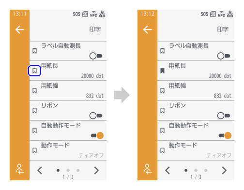
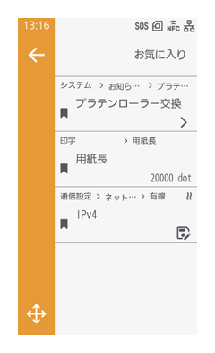
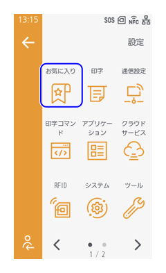
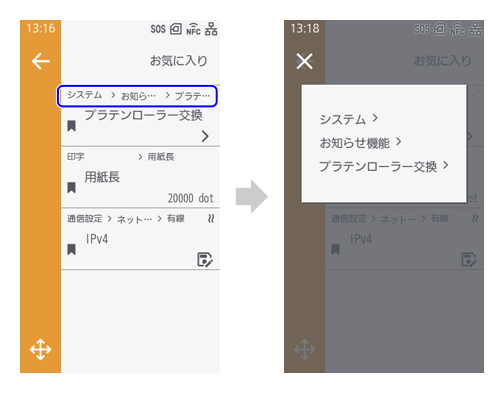

よく使う設定をお気に入り登録する
設定メニュー内でよく使う設定をお気に入りに登録すると、［お気に入り］メニューから簡単にアクセスできるようになります。
設定項目をお気に入りに登録する
設定項目をお気に入りに登録するには、各設定項目の左側にあるをタップします。


お気に入りから削除する場合は、をタップします。
お気に入りに登録された設定項目は［お気に入り］メニューに表示されます。

をタップすると、必要に応じて項目の並び順を変更できます。
並び順を変更したい設定項目をタップして選択状態にし、またはをタップすると、項目を上下に移動できます。をタップすると変更内容が保存されます。
お気に入りから設定項目にアクセスする
設定画面で［お気に入り］をタップします。
- お気に入りに登録した項目の中から設定したい項目をタップします。
- 各設定項目の上部をタップすると、設定項目がある階層を確認できます。
 ［お気に入り］メニューの画面からも設定項目のをタップしてお気に入りから削除できます。
- 各設定項目の上部をタップすると、設定項目がある階層を確認できます。